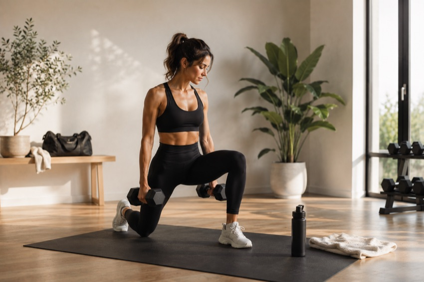

Programa 1:1
Llegaste hasta acá haciendo todo bien. Y aun así, algo no cierra.
Cuerpo Presente es el programa médico de recomposición corporal para mujeres profesionales que quieren resultados reales — sin empezar de nuevo cada lunes.
Completás un formulario breve y agendás una Llamada de Admisión.

Quién te acompaña
Un programa diseñado y conducido por una médica especialista
Diseño y conduzco personalmente cada programa — médica especialista en Nutrición, con formación en Medicina del Estilo de Vida y más de 90 mujeres acompañadas en procesos de transformación real.
Dra. Mayra González
Dejame explicarte
Por qué Cuerpo Presente funciona cuando todo lo demás falló.
Porque la diferencia no está en más esfuerzo. Está en el método.
Completás un formulario breve y agendás una Llamada de Admisión.
El método
Raíces del cambio
Mi método integra tres pilares que trabajan en conjunto: alimentación, entrenamiento y mentalidad. Todo cambio auténtico requiere una base sólida.
Materia Prima
El objetivo no es restringir sino nutrir. Es diseñar un plan basado en evidencia que funcione con tu vida real, sin culpa y sin contar calorías.

Ejercicio y Recuperación
Es necesario un entrenamiento de fuerza adaptado a tu cuerpo y tu momento. No sirven las rutinas genéricas. Movimiento que transforma y que podés sostener.
Hábitos y Conducta
Los hábitos no se construyen con fuerza de voluntad. Se construyen con estrategia, acompañamiento y comprensión profunda de cómo funciona tu mente.
Testimonios
Historias de mujeres que alguna vez se sintieron como vos
Y decidieron hacer las cosas diferente.
Como médica, llegué con muchos prejuicios. Creía que ya sabía todo lo que necesitaba saber sobre nutrición y entrenamiento. Lo que no sabía era por qué, aun sabiéndolo, no lograba sostenerlo. Mayra me ayudó a entender que el problema no era de información sino de estructura y acompañamiento. Hoy tengo más energía que a los 30, entreno tres veces por semana sin que se sienta una obligación y me relaciono con la comida de una manera completamente diferente — sin ansiedad, sin negociaciones mentales constantes.
Llegué a Cuerpo Presente después de años probando nutricionistas, dietas y rutinas que funcionaban dos semanas y después se caían solas. Con Mayra fue diferente desde el principio — no porque el proceso sea fácil, sino porque por primera vez sentí que alguien entendía mi vida real: mis horarios, mi estrés, mis viajes de trabajo. En cuatro meses cambié mi composición corporal de una forma que nunca había logrado. Pero lo que más valoro es que hoy sigo haciéndolo — sin que nadie me controle, sin culpa, porque aprendí a hacerlo para mí.
Empecé Cuerpo Presente siendo muy escéptica. Ya había invertido mucho dinero en coaches, apps y programas que prometían lo mismo. Lo que diferencia a Mayra no es solo su conocimiento médico — es la forma en que te acompaña. Nunca sentí que era una paciente más. Cada semana el plan se ajustaba a lo que me estaba pasando en la vida real. Los cambios físicos llegaron mucho antes de lo que esperaba. Pero lo que me quedó para siempre es saber cómo cuidarme sin depender de un plan externo.
El proceso
Un método diseñado para vos.
Cuerpo Presente no es un plan genérico. Es un proceso de trabajo conjunto, estructurado etapa por etapa, donde cada una la diseñamos en función de tu salud, tus objetivos y tu ritmo de vida.
La evaluación inicial
Antes de diseñar cualquier plan, necesito entenderte. Tu historia clínica, tus hábitos actuales, tus intentos anteriores, lo que funcionó y lo que no. La evaluación inicial es el punto de partida de todo lo que viene después.
Tu plan personalizado
No hay dos planes iguales en Cuerpo Presente. Lo que diseñamos juntas responde a tu caso específico — tu nutrición, tu entrenamiento, tu descanso y tus hábitos — todo integrado en una estructura que podés sostener con tu vida real.
El acompañamiento
La diferencia entre saber qué hacer y poder hacerlo es el acompañamiento. Estoy con vos en cada etapa del proceso — ajustando, revisando, respondiendo. No trabajás sola.
Los detalles del programa — estructura, frecuencia y todo lo que incluye — los conversamos en la llamada de admisión. Ese es el primer paso.
Cuando terminemos este proceso, no solo vas a haber transformado tu cuerpo.
Vas a sentirte más fuerte, más segura y con la claridad necesaria para dejar de empezar de nuevo cada lunes.
Aprenderás a alimentarte sin culpa, entrenar con propósito y construir hábitos que funcionen con tu vida. Porque la verdadera transformación ocurre cuando dejás de empezar de nuevo y empezás a confiar en vos misma.
Antes de aplicar
¿Esto es para mí?
Es para vos si…
- Consultaste a varias nutricionistas y con ninguna lograste ver cambios definitivos.
- Estás sobre-informada sobre tu alimentación y ya no sabés qué es lo que realmente funciona.
- Solo viste cambios cuando fuiste tan estricta que fue insostenible y vivís en modo todo o nada.
- Sabés lo que tenés que hacer, pero no podés mantener la constancia.
- Disfrutás entrenar, pero te frustra no saber qué hacer para ver cambios.
- Estás buscando que tu cuerpo refleje la persona que realmente sos.
- Estás decidida a invertir en un método que te permita volver a sentirte vos misma.
No es para vos si…
- No estás dispuesta a hacer entrenamiento de fuerza porque creés que te vas a "poner grandota".
- No estás dispuesta a entrenar 3 veces por semana para recuperar tu confianza y tu salud.
- Querés una solución fácil y rápida.
- No estás dispuesta a profundizar en tu vínculo con la alimentación, el ejercicio y la productividad.
- No estás dispuesta a seguir un plan de alimentación y de entrenamiento.
- No tenés intención de trackear tus macros o hacer registros alimentarios.
- No estás lista para comprometerte con vos misma.
Eso es Cuerpo Presente.
No es solo nutrición. No es solo entrenamiento. No es solo medicina.
Es un acompañamiento integral para que recuperes la fuerza, la energía y la confianza en vos misma — de una forma que se sostenga en el tiempo.
Porque cuando transformás la forma en que te relacionás con tu cuerpo, también transformás la forma en que vivís.
Completás un formulario breve y agendás una Llamada de Admisión.